Municipal services in Nepal today vs. with Municipal OS
Citizen registers, selects a service, fills the form, and uploads required documents — all from a browser.
System automatically routes the application through the defined multi-step workflow. Officers pick up and process their assigned steps.
On approval, the system auto-generates an official PDF certificate from a DOCX template merged with application data.
Citizen receives a notification and downloads their official, digitally-ready certificate directly from their portal.
All implemented capabilities in the Municipal OS POC
Each municipality is a separate tenant with its own services, workflows, officers, and branding (short name / code). One deployment serves many municipalities.
JWT-based auth with BCrypt password hashing. Four distinct roles: Citizen, Ward Officer, Municipal Officer, Admin — each with scoped access.
Admins define any number of government services (birth certificate, migration certificate, recommendation letter, etc.) per municipality with required document types.
Each service has a multi-step approval workflow. Admins define step order, required role per step, name/description, and SLA minutes per step. No code changes needed.
Citizens submit applications online with file uploads. Every document is stored in secure MinIO S3-compatible object storage, linked to the application.
Citizens see their application's current workflow step, assigned officer, step history with timestamps, and status (pending, in progress, approved, rejected, docs requested).
Officers see their municipality's pending applications queue and their personal assigned applications. They can pick up or be assigned steps matching their role.
Officers can approve a step (advancing the workflow), reject with reason, or request additional documents from the citizen — with full state tracking.
Each application gets a friendly reference ID (e.g. KMC-2081-00042) for use at counters and citizen support, not just database UUIDs.
On approval, the system merges application data into a DOCX template and auto-generates a professional PDF certificate. Officer can preview, edit merge fields, and finalize.
Admins upload DOCX templates with merge fields. System auto-extracts field schema. Multiple versions per service/language with version activation control.
Every application and step has due-date tracking using Nepal business-time calculator. Admin dashboard shows % on-time, breached, by service, by officer, by period.
Visual SLA outcome bar chart, paginated per-application SLA report with filters (date range, service type, SLA status, terminal officer). Admin-only access.
Every action is logged with user, timestamp, and context. Admins can query audit logs with filters. Supports accountability and anti-corruption requirements.
Users receive notifications on key events (step completed, document requested, approved/rejected). Listed in notification center per user.
Full i18n support for English and Nepali throughout the UI. Citizens and officers can operate in their preferred language.
Four distinct roles with scoped access and features
Any resident of a municipality. Self-registers and uses the portal to access government services.
Ward-level municipal staff who process applications that reach their designated workflow steps.
Senior staff who handle higher-level workflow steps and have broader visibility.
Municipality or system administrator who configures services, workflows, templates, and monitors performance.
Fully configurable multi-step workflows with role gating, SLA tracking, and automated document generation
Admins define exactly how applications flow through your municipality — no coding required
Current POC capabilities and the planned feature roadmap for production
Authentication (JWT, BCrypt), 4 roles, multi-municipality tenant model, municipality management, officer management, bilingual UI.
Admin-configurable service types with required documents, multi-step workflow definitions with role gating, step SLA minutes, no-code setup.
Online submission, document upload to MinIO, real-time status tracking, workflow progress visualization, friendly reference IDs, certificate download.
Work queues, step pickup/assignment, approve/reject/request docs, full application review UI, notification system, audit trail.
DOCX template upload, auto field extraction, versioning with activation, merge field editing, background PDF rendering, preview/finalize workflow, citizen download endpoint.
Nepal business-time SLA calculator, per-step and per-application due dates, admin SLA dashboard with charts and drill-down, on-time % metrics by service and officer.
Breakdown by ward, officer-level on-time rates, exportable reports for leadership, public-facing transparency pages showing aggregate service delivery rates.
Signature image or digital signing step embedded in the certificate finalization flow. Keeps a clear chain from officer identity to final document.
Push citizens outside the portal via SMS or email when their application status changes — critical for citizens without daily portal access.
Policy-driven DAG workflows: IF/ELSE rules skip or add steps at runtime based on application data (e.g. large builds need engineer approval). Full rule audit logging.
RabbitMQ integration (already in tech stack plan) for async event-driven architecture, WebSocket real-time updates to officer queues and citizen dashboards.
Read-only public view showing service availability, average processing times, and aggregate SLA compliance — supporting open government initiatives.
Nepal business-time SLA calculations, Nepali language UI, and municipality structure aligned to Nepal's local governance model.
Municipalities configure their own services, workflows, SLAs, and templates through the UI — no developer involvement needed after deployment.
Audit logs, SLA tracking, officer performance dashboards, and anti-corruption transparency reporting are core features — not afterthoughts.
Real screens from the running Municipal OS POC — click any image to enlarge
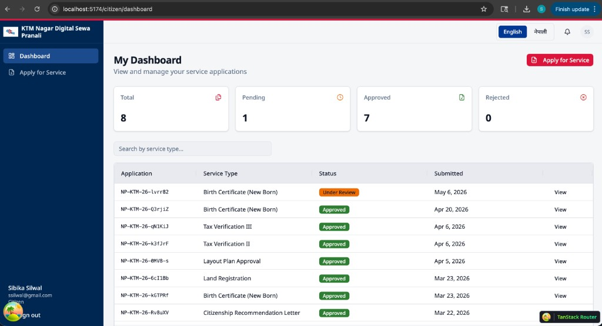
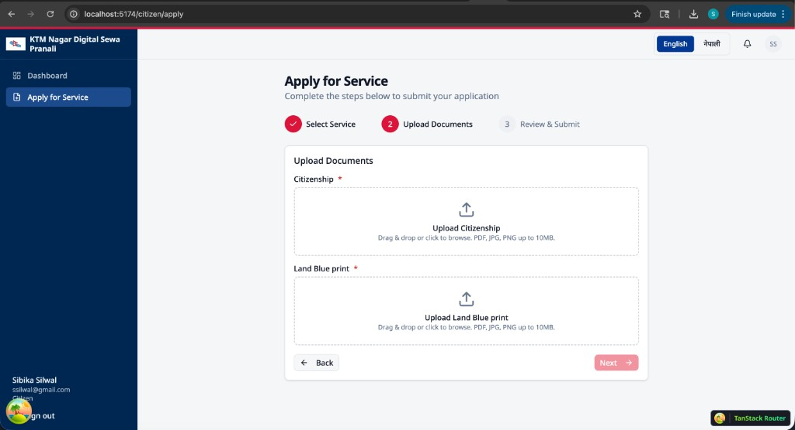
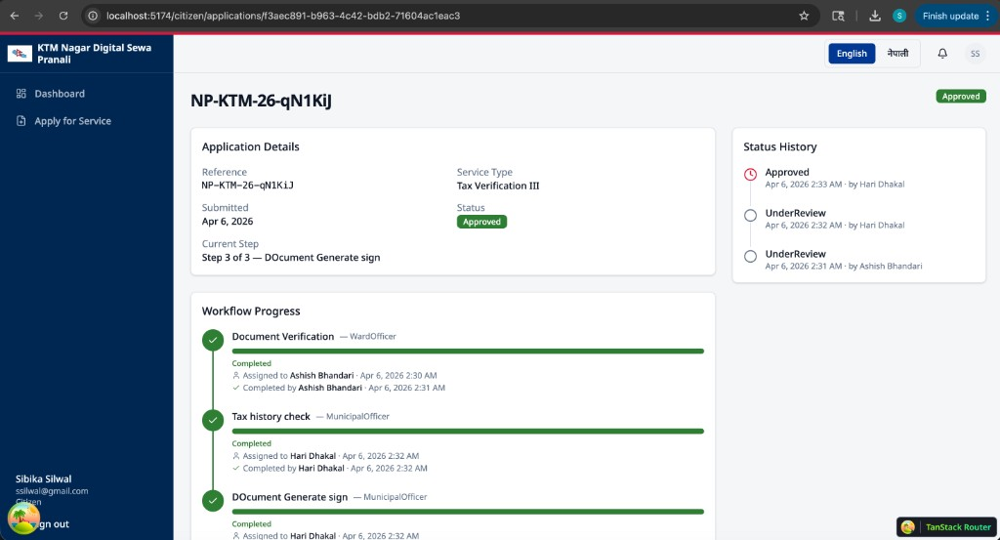
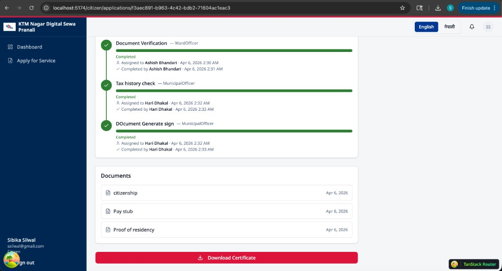
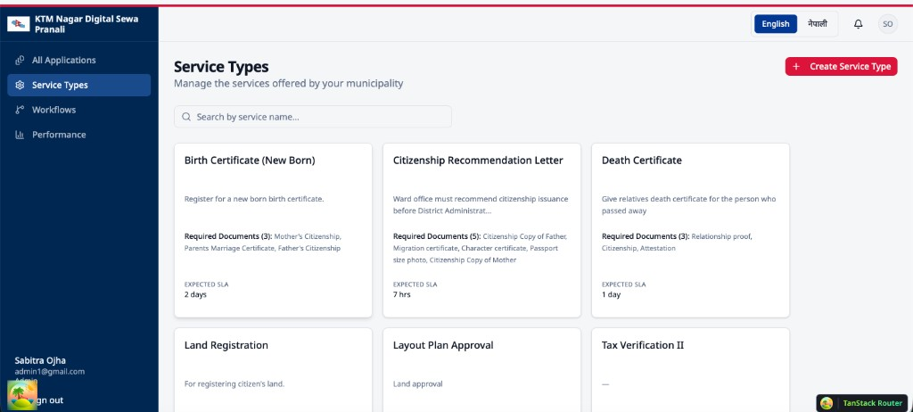
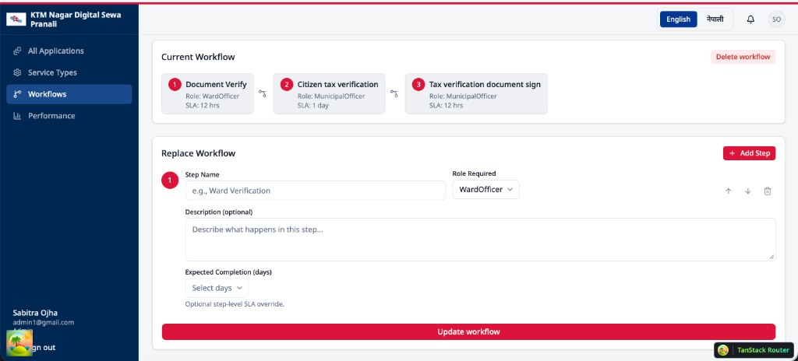
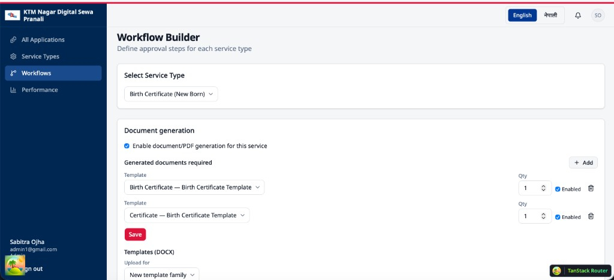
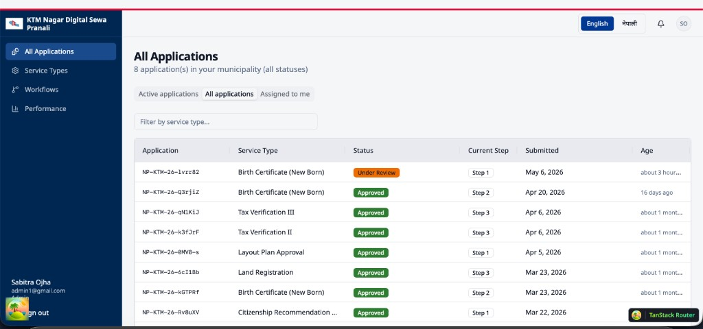
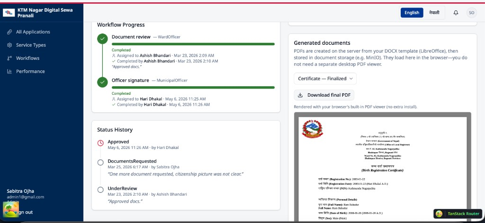
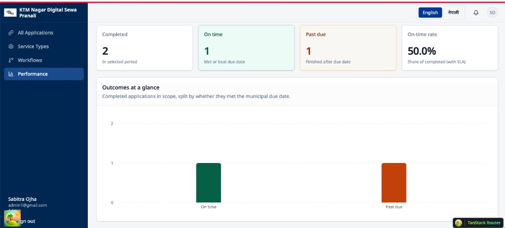
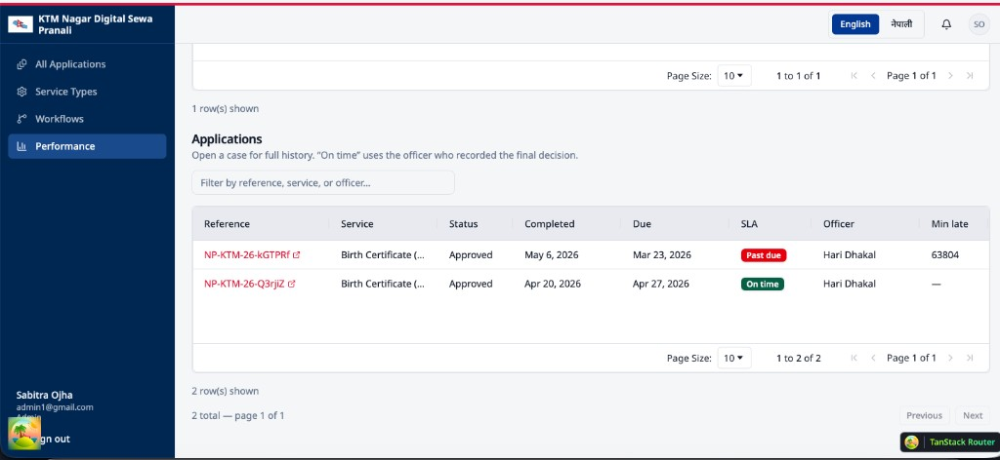